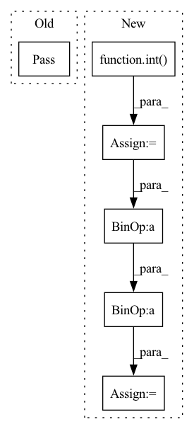

Pattern ID :32477

Before Change
return wsh
def finv(self, wsh):
pass
def g(self, ws):
pass
After Change
// Extracting data
batch = wsh.shape[0]
n_fft = wsh.shape[1]
n_channels = int(wsh.shape[2] / 2)
p = int(n_channels * (n_channels + 1) / 2)
// Output matrix
ws = torch.zeros(
(batch, 1, n_fft, 2, p), dtype=wsh.dtype, device=wsh.device
)
indices = torch.triu_indices(n_channels, n_channels)
ws[..., 0, :] = wsh[..., indices[0] * 2, indices[1] * 2]
ws[..., 1, :] = -1 * wsh[..., indices[0] * 2, indices[1] * 2 + 1]
return ws
In pattern: SUPERPATTERN
Frequency: 3
Non-data size: 6
Instances
Fragment ID: 94664228
Project Name: speechbrain/speechbrain
Commit Name: c0eb9b7fcb10494b27fc32cb370baf9871fe5b04
Time: 2020-06-13
Author: william.aris@usherbrooke.ca
File Name: speechbrain/processing/signal_processing.py
M Class Name: EigenH
N Class Name: EigenH
M Method Name: finv(2)
N Method Name: finv(2)
M Parent Class: torch.nn.Module
N Parent Class: torch.nn.Module
M File Name: speechbrain/processing/signal_processing.py
N File Name: speechbrain/processing/signal_processing.py
M Start Line: 301
M End Line: 301
N Start Line: 341
N End Line: 356
'>
Before Change
pass
def get_X(self, y):
pass
def get_Jac(self, y):
pass
After Change
ID, offset = self._get_interval_ID(y), self._get_interval_offset(y)
res = torch.zeros([1, self.dim])
for i in range(self.dim):
ID_i = int(ID[i])
res[0][i] = self.x_edges[i][ID_i] + self.dx_edges[i][ID_i] * offset[i]
return res
def get_Jac(self, y):
'>
Fragment ID: 94664352
Project Name: esa/torchquad
Commit Name: 1ab0c9f5691fe4971626169a351a42fbd4eb9c9f
Time: 2021-04-09
Author: contact@pablo-gomez.net
File Name: torchquad/integration/vegas_map.py
M Class Name: VEGASMap
N Class Name: VEGASMap
M Method Name: get_X(2)
N Method Name: get_X(2)
M Parent Class:
N Parent Class:
M File Name: torchquad/integration/vegas_map.py
N File Name: torchquad/integration/vegas_map.py
M Start Line: 16
M End Line: 16
N Start Line: 43
N End Line: 48
'>
Before Change
raise NotImplementedError("Loss function {} not found".format(self.loss_func))
def set_auto_batch_epoch(self, n_data):
pass
@dataclass
class Model:
After Change
max_batch: int = 128,
):
assert n_data >= 1
log_data = int(np.log10(n_data))
if self.batch_size is None:
log2_batch = 2 * log_data - 1
self.batch_size = 2 ** log2_batch
self.batch_size = min(max_batch, max(min_batch, self.batch_size))
if self.epochs is None:
datamult = 1000.0 / float(n_data)
self.epochs = datamult * (2 ** (3 + log_data))
@dataclass
'>
Fragment ID: 94664236
Project Name: ourownstory/neural_prophet
Commit Name: a35a38f69de922bf131afe3171edbe1870dca639
Time: 2020-12-04
Author: ourownstory@users.noreply.github.com
File Name: neuralprophet/configure.py
M Class Name: Train
N Class Name: Train
M Method Name: set_auto_batch_epoch(4)
N Method Name: set_auto_batch_epoch(2)
M Parent Class:
N Parent Class:
M File Name: neuralprophet/configure.py
N File Name: neuralprophet/configure.py
M Start Line: 131
M End Line: 132
N Start Line: 132
N End Line: 147